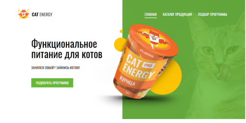
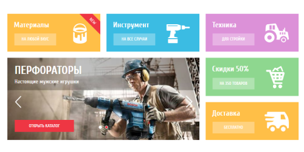
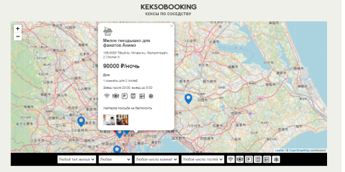
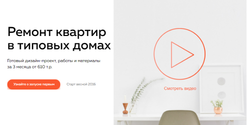
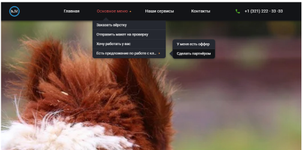

Портфолио
Адаптивная вёрстка

интернет-магазинаУчебный проект. Сделана адаптивная вёрстка трёх страниц для мобильной, планшетной и десктопной версий экрана по принципу Mobile First с использованием методологии БЭМ. Оптимизирована загрузка изображений и шрифтов. Произведена минификация файлов. Все страницы свёрстаны по PixelPerfect.
Вёрстка интернет-магазина
Учебный проект. Кроссбраузерная вёрстка двух страниц для десктопа. Все изображения оптимизированы, файлы минифицированы. Все страницы свёрстаны по PixelPerfect.
Сервис по поиску и размещению объявлений об аренде
Учебный проект на JavaScript. Для готовой вёрстки запрограммирована возможность отбора и сортировки загруженных с сервера данных. Реализован функционал для заполнения формы пользователем: загрузка изображений, выбор координат на карте, валидация полей формы. Файлы минифицированы. Сборка проекта с помощью WebPack.
Адаптивный лонгрид
Тестовое задание. Необходимо было сделать вёрстку одностраничного лонгрида по макету из Figma, запрограммировать слайдер и фейковое окно успешной отправки формы на чистом JavaScript без использования библиотек, а также предложить свой вариант адаптива для мобильной и планшетной версий экрана.
Адаптивное меню
Тестовое задание. Необходимо было подготовить адаптивную вёрстку многоуровневого меню согласно ТЗ по макету из Figma. Реализация функционала на JavaScript была не обязательна и добавлена по желанию.